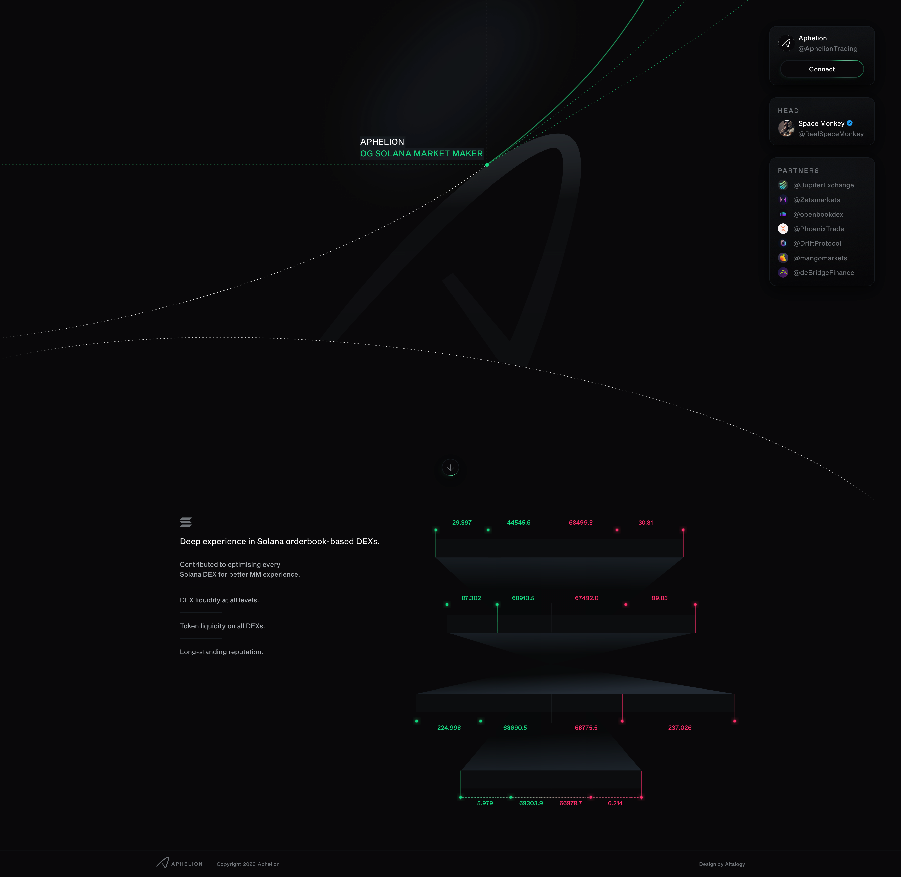

No Code Website Builder
The growth of decentralized finance has created an increasing need for reliable liquidity. On a blockchain such as Solana, users expect to be able to buy and sell tokens efficiently, while decentralized exchanges need sufficient liquidity to support active markets. This is where professional market makers play an important role.
Aphelion Trading, which describes itself as an “OG Solana market maker,” is a Solana-native market-making firm focused on on-chain liquidity and decentralized exchange infrastructure. Its website highlights deep experience with Solana order-book-based decentralized exchanges and services covering liquidity across different DEX venues.
For projects launching tokens, decentralized exchanges seeking deeper markets, and protocols building trading infrastructure, understanding what a Solana market maker does provides useful insight into how decentralized markets function.
A market maker is a participant that provides buy and sell liquidity to a market. In traditional finance, market makers help maintain active order books by continuously quoting prices for assets.
The same basic concept can be applied to decentralized markets, although the implementation differs depending on the trading system.
Solana supports several different types of decentralized trading infrastructure, including automated market makers, concentrated liquidity systems, and central-limit-order-book-style exchanges. Aphelion focuses particularly on the order-book side of the Solana ecosystem. Its website says the firm has “deep experience in Solana orderbook-based DEXs” and has contributed to optimizing Solana DEXs for market-making activity.
A professional market maker can place and manage liquidity around a market price, helping create a more functional trading environment for users.
Aphelion Trading presents itself as a Solana-native market-making firm founded by Adam, known online as Space Monkey. Public posts associated with the company describe its mission as accelerating decentralized trading and DeFi.
Its website emphasizes three major areas:
Liquidity across decentralized exchanges
Token liquidity across DEX markets
Experience with Solana order-book-based trading
The company also lists relationships with or work involving several Solana ecosystem projects and trading venues, including Jupiter, Zeta Markets, OpenBook, Phoenix, Drift, Mango Markets, and deBridge.
These relationships illustrate the type of ecosystem in which a market-making firm operates: decentralized exchanges, trading protocols, aggregators, and infrastructure providers all depend on functioning liquidity markets.
Market making on Solana can involve supplying liquidity to order books or other decentralized liquidity systems.
In an order-book environment, buy orders are placed at different prices below the current market price while sell orders can be placed above it. The collection of these orders creates a market structure that allows traders to execute purchases and sales.
A market maker can continuously adjust these orders based on market conditions.
The goal is not simply to place a large amount of capital into one position. Effective market making involves managing inventory, prices, spreads, volatility, and execution risk.
Solana's high-speed infrastructure can be particularly relevant for automated trading because market makers may need to update orders frequently as prices change.
One of Aphelion's stated areas of focus is providing liquidity across Solana decentralized exchanges. The company's website specifically describes its offering as “DEX liquidity at all levels” and “token liquidity on all DEXs.”
Liquidity is important because a market with insufficient liquidity can experience significant price impact. A trader attempting to execute a large order may move the market substantially if there are not enough opposing orders.
Greater liquidity can potentially support:
More efficient trade execution
Tighter spreads
Greater market depth
Lower price impact
More consistent trading activity
However, liquidity conditions vary by token, exchange, market volatility, and trading volume. Market making does not eliminate these risks.
Token projects are another important part of the market-making ecosystem.
When a new token begins trading, it may initially have limited liquidity and a relatively small number of market participants. Professional liquidity providers can help establish trading markets across supported decentralized exchanges.
Aphelion has publicly promoted its work with tokens and Solana-based projects. Its social profile describes the firm as specializing in on-chain liquidity and DEX advisory.
For a token project, market-making arrangements can involve considerations such as:
Which DEXs should receive liquidity
How liquidity should be distributed
How market depth should be managed
How inventory risk is controlled
How liquidity changes during volatile periods
These decisions can have an important effect on the trading experience surrounding a newly launched asset.
One feature associated with Solana's decentralized trading infrastructure is the use of on-chain order books.
Compared with some traditional automated market-maker models, an order book can allow liquidity providers or professional market makers to quote specific prices.
Aphelion has publicly highlighted order-book-based trading and previously promoted on-chain BTC trading through a central-limit-order-book model on Solana.
Order books can provide precise control over where liquidity is placed, although maintaining efficient quotes requires active management.
Capital efficiency is therefore an important consideration. A market maker generally wants available capital to provide meaningful liquidity without unnecessarily exposing the entire inventory to market movements.
Aphelion operates within a broad Solana trading ecosystem rather than functioning as an isolated platform.
The company's website identifies partnerships or ecosystem relationships involving Jupiter, Zeta Markets, OpenBook, Phoenix, Drift, Mango Markets, and deBridge.
These projects represent different parts of decentralized trading infrastructure. Aggregators help users find routes between liquidity sources, decentralized exchanges facilitate trading, and cross-chain protocols connect assets and ecosystems.
Market makers can therefore serve as an underlying liquidity layer connecting token projects with trading venues.
Market makers are important because decentralized markets need liquidity to function effectively.
Without sufficient liquidity, even a popular token can experience large spreads or significant price impact. Traders may have difficulty entering or exiting positions at prices close to the displayed market price.
A market maker can help address some of these issues by continuously quoting both sides of a market.
However, market makers do not guarantee a particular token price, trading volume, or market performance. Their activities are subject to market conditions, inventory constraints, volatility, and liquidity demand.
This distinction is important when evaluating market-making services.
As Solana's decentralized trading ecosystem develops, professional liquidity infrastructure is likely to remain an important component of the market.
The ecosystem continues to include order-book exchanges, automated market makers, liquidity aggregators, derivatives platforms, and other financial applications.
Aphelion's focus on Solana-native liquidity and order-book-based DEXs positions it within this broader development. Its stated objective of improving the market-making experience across Solana DEXs reflects the increasing sophistication of decentralized trading infrastructure.
Future market-making systems may increasingly combine automated strategies, sophisticated risk management, real-time blockchain data, and liquidity routing across multiple venues.
Market making is a specialized financial activity and carries substantial risks.
One major risk is inventory exposure. If an asset moves sharply in one direction, a market maker holding inventory may experience losses.
Another is volatility. Rapid price movements can make previously placed orders outdated within a short period.
There are also smart-contract and infrastructure risks when market-making activity interacts with decentralized protocols.
For token projects considering market-making services, it is important to understand the terms of any agreement, including liquidity arrangements, inventory management, fees, token allocations, reporting, and termination conditions.
For ordinary traders, the existence of a market maker should not be interpreted as a guarantee that an asset is legitimate or that its price will rise.
The term OG Solana Market Maker refers to Aphelion Trading, a Solana-focused market-making firm that works around on-chain liquidity and decentralized trading infrastructure.
Aphelion's public materials emphasize experience with Solana order-book DEXs, liquidity provision, token markets, and DEX advisory.
Market makers play an important behind-the-scenes role in decentralized markets. By providing buy and sell liquidity, they can contribute to deeper markets and more efficient trading environments.
For anyone researching Solana's DeFi ecosystem, understanding market makers such as Aphelion helps explain what happens beneath the user-facing trading interface. DEXs, aggregators, tokens, and traders all depend on liquidity, making professional market-making infrastructure an important part of the broader Solana trading landscape.
No Code Website Builder